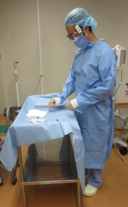
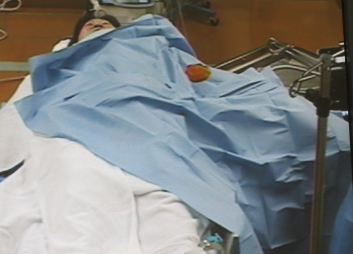
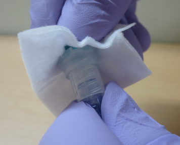

Ⅵ. 侵襲処置・医療器具関連感染防止策
カテーテル関連血流感染防止策
- カテーテル関連血流感染
カテーテルを血管内に留置することが契機となって発生する菌血症
- カテーテル関連血流感染の感染経路と発生機序 (図1.参照)
- カテーテル挿入部位の汚染
- 薬液の汚染
- ルート接続部位の汚染
- 医療従事者の手指と消毒液の汚染
- その他の侵入経路
感染症を契機に2次性に血流からカテーテルに定着
図1.血管内留置カテーテルの微生物侵入経路と要因
薬液の汚染
感染症を契機に2次性に血流からカテーテルに定着 ルート接続部位の汚染 カテーテル挿入部位の汚染 医療従事者の手指と消毒液の汚染 |
- 感染予防対策
- 中心静脈カテーテル
- 挿入に関して
- カテーテルの選択
- 挿入に関して
- 中心静脈カテーテル
- 感染予防対策
- カテーテルのルーメン数は必要最低限となるようにする。
- カテーテルは使用目的によって選択する。（図2参照）。
- 挿入部位の選択
引用元：日本VADコンソーシアム編「輸液カテーテル管理の実践基準」南山堂,2016年
輸液治療の必要あり
1週間未満
1週間以上
3か月以上
3か月未満
ＰＶＣ
PICC
(CVC)
CVポート
皮下トンネル型
CVC
PICC
※侵襲性評価項目
・壊死性、PH、浸透圧比、発泡性などの確認
・その他、高濃度血管作動薬などの安定投与の必要性を考慮
投与薬剤の侵襲性の評価※
図2. デバイス選択のアルゴリズムの一例
- 感染リスクの観点からは、鎖骨下穿刺を第一選択とする。
- 大腿静脈の穿刺は、汚染、下大静脈血栓のリスクがあり、極力使用しない。
- 挿入部の皮膚衛生
- 挿入前にシャワー浴、不可能であれば清拭を行い皮膚の汚れを取り除く。
- カテーテル挿入部の消毒は広範囲に１％クロルヘキシジン含有アルコールで消毒し、十分に乾燥させる
- カテーテルの交換
- 中心静脈カテーテルの定期的な交換は行わない。
- 挿入時
- カテーテル挿入前に手指衛生を行う。
- マキシマル・バリアプリコーション（帽子・マスク・滅菌ガウン・滅菌手袋・大きなドレープを用いたプリコーションのこと）を行う(図3.参照)。
- 総室や人の往来の多い所では行なわず、処置室など環境の整った場所で行う。

挿入後の管理

図3. マキシマル・バリアプリコーション
- 挿入部の管理
- 挿入部に触れる前に手指衛生を行う。
- 滅菌ガーゼまたは、滅菌のフィルムドレッシングを使用する。
- 滅菌ガーゼは2日に1回、滅菌フィルムドレッシングは少なくとも7日に1回交換する。
- フィルムドレッシングでかぶれたり、出血や発汗の多い時は、ガーゼドレッシングにする。
- 挿入部は最低1回/日観察・記録する。
固定糸の状態
挿入部の状態（発赤・腫脹・疼痛・浸出液の有無）
ドレッシングによるかぶれ
カテーテル挿入の長さ
- カテーテル関連血流感染症ハイリスク症例には、クロルヘキシジン含有ドレッシング材を使用することを考慮する。
- 輸液ラインの管理
輸液ライン
- 輸液ラインに触れる前は手指衛生を行う。
- 可能な限りクローズドシステムを使用する。
- ガラス製の輸液ボトルにはフィルター付きのエア通気針を用いる。
- 輸液は、週1回交換し、交換日を輸液ラインに記載、また、交換の実施について診療録に記録する。
- 血液、血液製剤、脂肪乳剤を投与した輸液ラインは24時間以内に交換する。
- プロポフォールを投与する輸液ラインは、12時間以内に交換する。
フィルター
- インラインフィルターは原則的に使用する。
接続部
図4.コネクターのスクラブ方法
- 接続部に触れる前は手指衛生を行う

３方活栓はラインに組み込まず、使用する場合はニードルレスコネクターを用いる。- ニードルレスコネクターを使用する都度、弁体の破損、汚れの状況を観察し、問題があればその都度交換する。
- ラインの接続部はアルコール綿花でゴシゴシとスクラブしながら拭き取る（図4.参照）。
ロック
- ヘパリンと配合変化を起こす薬剤は、生理食塩水でロックする。
- 持続的に使用していない輸液ラインは、早期に抜去する。
- 陽圧フラッシュロック（陽圧フラッシュしながら針を抜く）を行う。
- フラッシュの際には、パルシングフラッシュ（カテーテル内に波動を起こし、カテーテル壁への洗浄効果を高める）という方法がある（図5.参照）。
図5. 生理食塩水フラッシュによるカテーテル内腔の清浄方法
～パルシングフラッシュ～
通常のフラッシュ
パルシングフラッシュ
- 輸液の作成
- 高カロリー輸液の調製は無菌環境下（クリーンベンチ）で行うことが望ましい。汚染区域と交差しないようにする。
- 病棟での高カロリー輸液の調整はなるべく行わず、可能な限り、調整済みの高カロリー製剤または薬剤部での「予製剤」を原則的に使用する。
病棟での輸液作成時
- 輸液作成前はプロセステーブルをエタノール含有のクロス（目に見える汚染があるときは、環境クロス＋エタノール含有のクロス）で清拭消毒する。
- サージカルマスクを着用し、手指衛生の後、未滅菌手袋を着用し作成する。
- 使用直前に作成する。
- バイアル、アンプルの開栓時、口の部分を消毒用エタノールで清拭する。
- 可能な限り、病棟で追加混合製剤が少なくなるような、輸液を選択する。
- 末梢静脈カテーテル
- 挿入後の管理
- 末梢静脈カテーテル
- 挿入部に触れる前は手指衛生を行う。
- 末梢静脈カテーテルのドレッシングは、半透明ドレッシングを貼付し、挿入部の観察を毎日行う。
- 静脈炎兆候や感染兆候（発赤、腫脹、疼痛、熱感、浸出液の有無）がある場合は、カテーテルの入れ替えを行う。
- 末梢静脈カテーテルラインの交換は、7日間を最大として交換する。また、カテーテル入れ替え時、肉眼的に汚染が認められた時も交換する。
- ロックに関しては、１）中心静脈カテーテル ③挿入後の管理 (ⅱ)輸液ラインの管理を参照とする。
- 末梢動脈カテーテルと血圧モニタリングシステム
- 挿入に関して
- 末梢動脈カテーテルと血圧モニタリングシステム
大腿または腋窩より、橈骨または上腕または、足背に挿入することが望ましい。
- 挿入後の管理
- 挿入部に触れる前は手指衛生を行う。
- 挿入部の観察を毎日行い、感染兆候（発赤、腫脹、疼痛、熱感、浸出液の有無）がある場合、カテーテルの入れ替えを行う。
- 圧モニタリングセットを96時間以内に交換する必要はない。